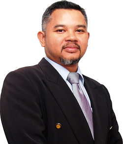
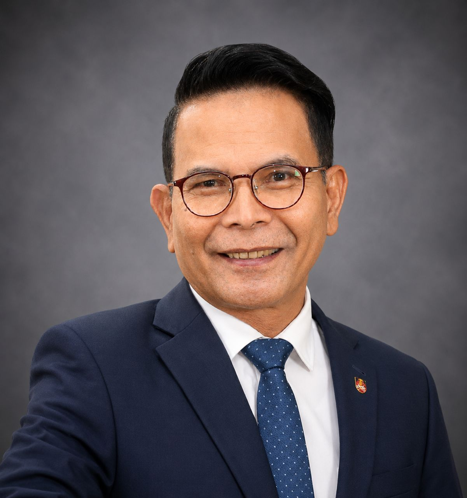
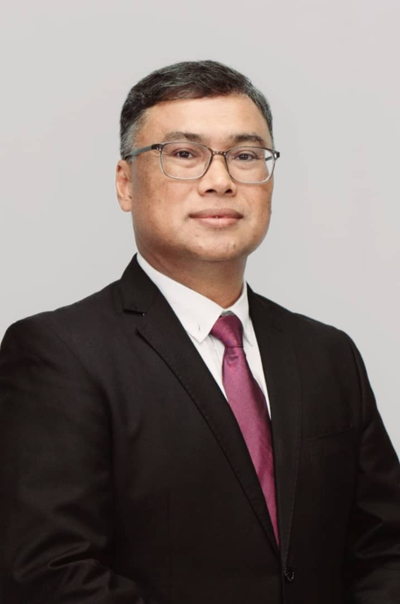

Exchange
Share emerging research in a focused postgraduate forum.
UiTM Cawangan Perlis · Postgraduate Colloquium 2026
Engaging minds. Empowering research. Sustaining tomorrow.
01 · The colloquium
ASCEND'26 brings together postgraduate students, researchers, academicians and industry professionals to exchange ideas, present discoveries and build multidisciplinary collaborations.
The colloquium encourages research aligned with the United Nations Sustainable Development Goals, including quality education, health and well-being, innovation, sustainable communities, climate action, responsible production and meaningful partnerships.
Share emerging research in a focused postgraduate forum.
Connect disciplines, institutions and professional perspectives.
Advance evidence-based work with societal and environmental value.
02 · Keynote speakers
Four invited scholars share practical and strategic insights for stronger, more sustainable research.

Keynote title
To be announced

Keynote title
Are Your Research Questions, Objectives, Hypotheses, and Statistical Analysis Aligned?

Keynote title
Postgraduate Research as a Catalyst for Sustainable Development and SDG Achievement
Keynote title
The Successful Postgraduate: Research Smarter, Progress Faster, Graduate on Time
03 · Tentative programme
The programme runs from 8.00 am to 5.00 pm. Session details remain subject to operational adjustments.
| Time | Programme | Details |
|---|---|---|
| 8.00–8.30 am | Participant Registration and Virtual Session Admission | Participants and virtual guests join the Google Meet session, while on-site keynote speakers and invited guests complete venue admission. Technical and audio-visual checks are conducted. |
| 8.30–8.35 am | Opening and Welcome by Emcee | The emcee welcomes participants and distinguished guests to ASCEND'26 and briefly introduces the programme. |
| 8.35–8.40 am | National and University Anthems | Singing of Negaraku, followed by Wawasan Setia Warga UiTM. |
| 8.40–8.50 am | Welcome Remarks and Official Opening | Welcome remarks by the Rector of UiTM Cawangan Perlis, followed by the official opening of ASCEND'26. |
| 8.50–9.00 am | Official Opening Montage | Presentation of the official ASCEND'26 opening montage. |
| 9.00–11.00 am | Hybrid Keynote Speaker Session | Four keynote speakers in a hybrid session, with 15 minutes allocated to each speaker, including brief transitions between speakers. |
| 11.00 am–2.00 pm | Online Parallel Session | Concurrent online academic presentation sessions according to designated tracks and themes. |
| 2.00–3.00 pm | Lunch Break | Break for lunch, prayer, networking, and personal activities. |
| 3.00–4.00 pm | Closing Ceremony and Announcement of Winners | Closing remarks and appreciation to speakers, presenters, committee members, and participants, followed by the announcement and recognition of winners. |
| 4.00–5.00 pm | Official Closing and Group Photograph | Closing by the emcee, virtual group photograph, and final announcements. |
| 5.00 pm | Programme Ends | Participants are invited to leave the Google Meet session. |
04 · Important dates
Plan your registration, submission and confirmation using the dates below.
Participant registration and extended abstract submission begin.
Final date to register and submit an extended abstract.
Acceptance notifications are issued to participants.
Complete payment and confirm participation.
Submit the completed full paper by the closing date.
Participant presentations are online only; keynote sessions are hybrid.
05 · Fields of interest
All areas listed in the current draft call, grouped into two multidisciplinary tracks.
18 areas
12 areas
06 · Registration fees
Local and international attendees pay the same fee according to their participation category. The method of payment will be notified later via the corresponding author's email.
Participant
RM 100Local & international
For postgraduate presenters participating in ASCEND'26.
Listener
RM 10Local & international
For attendees joining the colloquium without presenting.
Publication opportunities
Selected papers may be invited for publication following evaluation of the submitted abstract or extended abstract and the ASCEND'26 presentation.
Invitations depend on quality, relevance and originality. Journal or proceedings requirements, peer review and any publication fees remain separate from colloquium registration.
07 · Registration
Create your ASCEND account, register for the colloquium, and manage your submission through the official portal.
The separate abstract template will be added when its final document is supplied.